# 变差函数和结构分析
# 地统计的发展历史
# 地统计学资料
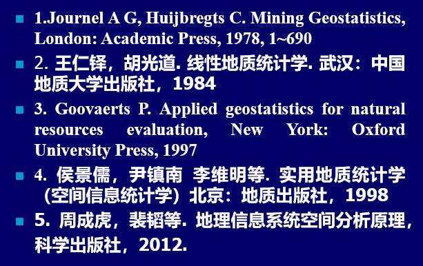# 国外杂志
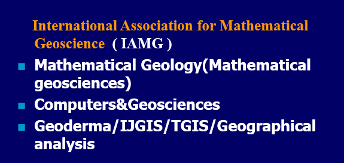专门的主要是IAMG和MG
# 地统计的研究内容
- 地统计是真正从地学发展起来的一门学科
- GIS是真正从地学中发展起来的技术
地统计定义：利用空间随机变量之间的空间相关性来研究空间随机场的统计特征。
理解：利用有限样本，根据空间相关性，恢复空间随机场的状态
地统计的基础是空间邻近原理。
具体内容：
- 结构分析理论（变差函数）
- 克立格估计理论（Kriging方法）
- 条件模拟理论（蒙特卡罗方法）
克里格估计和条件模拟区别：
- 克里格估计要求最优无偏估计，估计出来的随机场是平滑的，过于准确
- 条件模拟是最小方差，估计出来的随机场是综合实际情况的。
# 变差函数的概念
区域化变量和两点之差的方差之半定义为的变差函数。
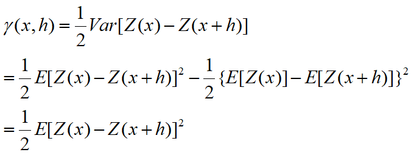区域化变量就是空间随机场
变差函数与协方差函数之间的关系：
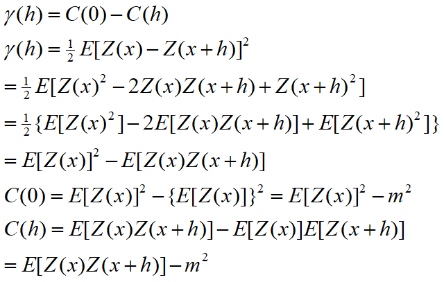
# 实验变差函数的计算
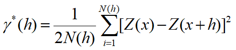点对云图方法
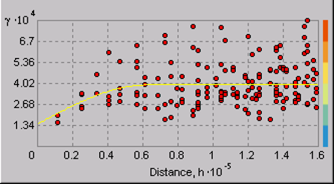N个样本，每对样本距离作为x轴，每对样本的变差函数值作为y轴。共有个点。
点对分组计算
成对计算，其计算复杂度太高。一般按角度或者距离分组。
角度容差
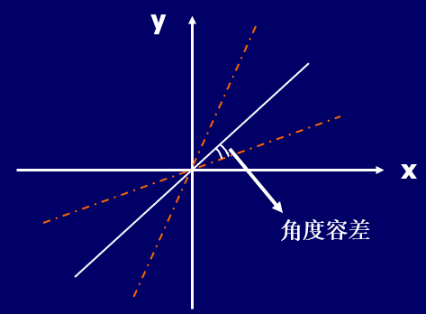比如45°斜对角，左右偏移一定角度容差内的为一组。
距离容差
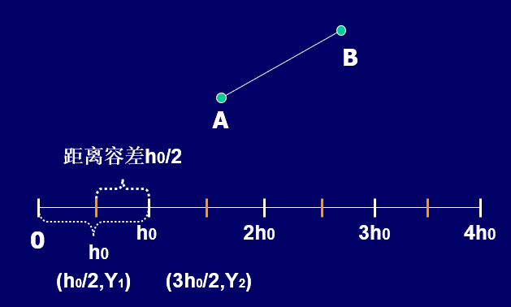比如距离容差为为界，左右分组。
离群值对实验变差的影响
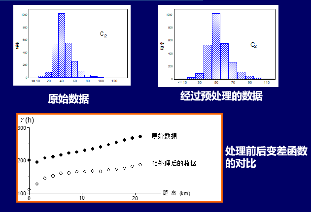变差函数计算时，需要计算点对之间的差的平方，若存在离群值，则对变差函数拟合有较严重的影响，一定要注意！！
# 变差函数模型的拟合和套和
# 拟合
变差函数的模型根据变差函数在原点处的特性分为：
连续型
间断型
随机型
与距离无关系，任意距离下空间差异都是一致的。
过渡型
变差函数模型：
球状模型
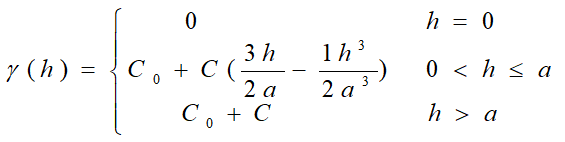
指数模型
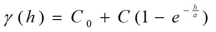
高斯模型

变差函数参数：
块金常数
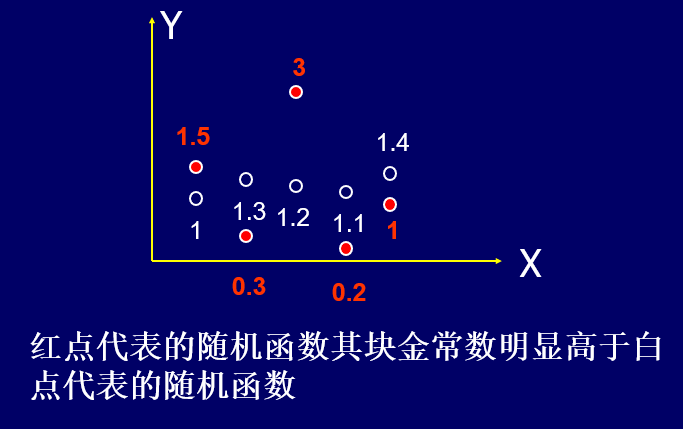块金常数可用来衡量随机场的粗糙程度
变程
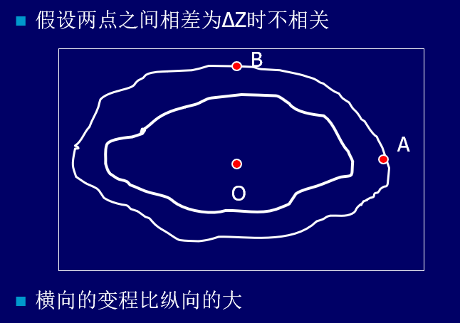变程可用来衡量随机场的尺度
拱高
基台值
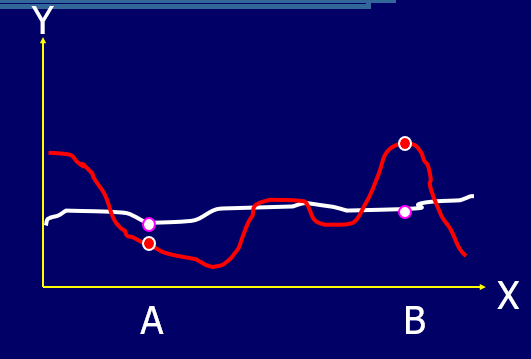基台值可用来衡量随机场的变化起伏
红色基台值比较高，由于其起伏较大
以球状模型为例，来讲解这些参数

理解四个地方
- 函数随h增加而增加：由于地理学第一定理解释
- 的存在：由于地理学空间处处不连续，或者不稳定；
- ：由于距离到一定程度上，就不再相关。
# 套和
实际的区域化变量的变化性是十分复杂的，往往包含着各种尺度上的多层次性，反映在变差函数上就是它的结构不是单纯的一种结构，而是多层次结构叠加在一起称为套和结构。
理解：混合的变差函数模型，由多个变差函数组合而成。
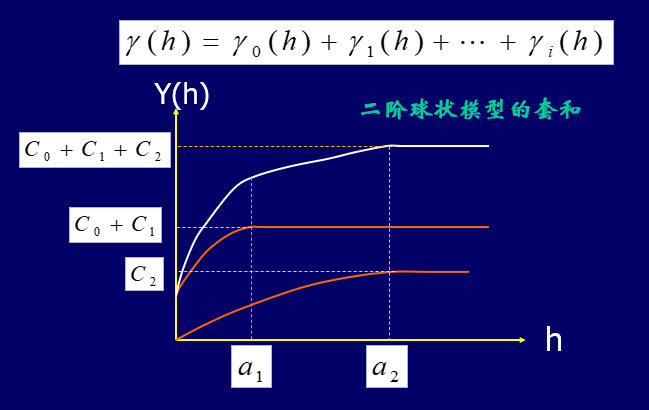案例
地质上：全球构造运动、断裂带上的构造运动、断层上的变形
地理上：全球的变化、气候带的变化、局部的变化
# 变差函数的应用
变差函数和区域变量（随机场）的对应关系（噪声，相关程度，相关范围）
空间场的各向异性

空间场的尺度特征
空间场的周期性特征
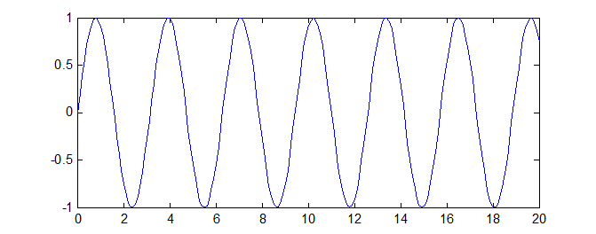某种方式周期型采样，结果如下图：

可以用来估计周期
变差函数进行结构分析